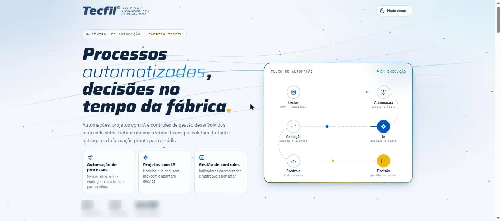

Sou Iago Henrique Santos, formando em Análise e Desenvolvimento de Sistemas. Especialista em transformar dados brutos em decisão e em automações com IA generativa, engenharia de prompt e FP&A.
A junção de todos os projetos automatizados em uma central única. Cada setor encontra ali seus painéis, automações e projetos com IA: dados que antes viviam em planilhas viram fluxos que coletam, tratam e entregam a informação pronta para decidir.

Sistemas que criei para a Controladoria Fabril, de gêmeo digital a agentes de IA. Passe o cursor (ou toque) para ver a planta técnica de cada um. Valores e nomes foram borrados por governança de dados.
O que uso no dia a dia para levar o dado da origem até a decisão, com o mínimo de trabalho manual no meio.